Homework 1 - Welcome to the class tools¶
by Todd M. Gureckis and Brenden M. Lake. Code shared under the CC BY-SA 4.0 license. Credit given where inspiration was obtained from others!
The notebooks for Homework 2 are structured as follows:
This notebook gives an overview of the Jupyter Notebook. You will be using the Jupyter notebook environment to complete your homeworks and final projects. It includes an overview of writing formatted text including equations in the notebook. This is how you will help to organize/comment on your notebooks as well as complete the short answer questions on the homeworks.
In the lab session you should have received a quick tutorial on getting an operating Jupyter notebook environment (either from the cloud based solution provided for the class or on your home computer/laptop). If you are having trouble getting started please get in touch with the TA
As you go through these notebooks you will sometimes encounter colored cells. These provide helpful notes:
Green cells denote that you are being asked to perform some action or answer a question for the homework. We will be grading your responses the follow these types of cells so before turning in your homework make sure you have read and answered any thing that appears in a green cell.
Blue cells denote helpful tips that we want to call attention to.
Yellow cells denote warning to make sure you don't make a mistake or fail to load a necessary library.
Red cells provide even more of a warning. Make sure you read and understand these!!
Introduction to the Jupyter Notebook (part 1)¶
The notebook consists of a series of cells. For example, this text is in what is called a “Markdown cell”. The following cell is a “code cell”:
# this is a code cell
You can tell what the type of a cell is by selecting the cell, and looking at the toolbar at the top of the page. For example, try clicking on this cell. You should see the cell type menu displaying “Markdown”, like this:

Command mode and edit mode¶
In the notebook, there are two modes: edit mode and command mode. By default the notebook begins in command mode. In order to edit a cell, you need to be in edit mode.
Markdown cells¶
For example, a markdown cell might look like this in command mode (Note: the following few cells are not actually cells – they are images and just look like cells! This is for demonstration purposes only.)
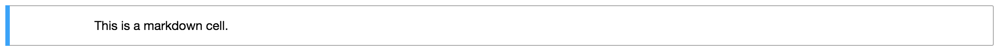
Then, when you press enter, it will change to edit mode:

Now, when we press escape, it will change back to command mode:

However, you’ll notice that the cell no longer looks like it did originally. This is because IPython will only render the markdown when you tell it to. To do this, we need to “run” the cell by pressing Ctrl-Enter, and then it will go back to looking like it did originally:
Code cells¶
For code cells, it is pretty much the same thing. This is what a code cell looks like in command mode (again, the next few cells LOOK like cells, but are just images):
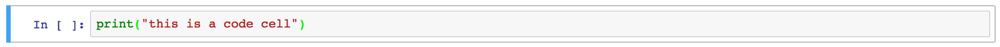
If we press enter, it will change to edit mode:

And pressing escape will also go back to command mode:
If we were to press Ctrl-Enter like we did for the markdown cell, this would actually run the code in the code cell:
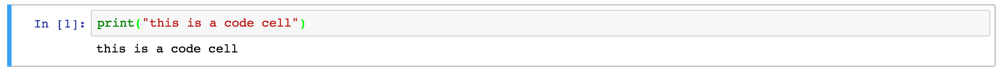
Executing cells¶
Code cells can contain any valid Python code in them. When you run the cell, the code is executed and any output is displayed.
Ctrl-Enter (which will keep the cell selected), or Shift-Enter (which will select the next cell).
Try running the following cell and see what it prints out:
print("Printing cumulative sum from 1-10:")
total = 0
for i in range(1, 11):
total += i
print("Sum of 1 to " + str(i) + " is: " + str(total))
print("Done printing numbers.")
You’ll notice that the output beneath the cell corresponds to the print statements in the code. Here is another example, which only prints out the final sum:
total = 0
for i in range(1, 11):
total += i
print(total)
Another way to print something out is to have that thing be the last line in the cell. For example, we could rewrite our example above to be:
total = 0
for i in range(1, 11):
total += i
total
However, this will not work unless the thing to be displayed is on the last line. For example, if we wanted to print the total sum and then a message after that, this will not do what we want (it will only print “Done computing total.”, and not the total sum itself).
total = 0
for i in range(1, 11):
total += i
total
print("Done computing total.")
If you are accustomed to Python 2, note that the parentheses are obligatory for the print function in Python 3.
The IPython kernel¶
When you first start a notebook, you are also starting what is called a kernel. This is a special program that runs in the background and executes code (by default, this is Python, but it could be other languages too, like R!). Whenever you run a code cell, you are telling the kernel to execute the code that is in the cell, and to print the output (if any).
Just like if you were typing code at the Python interpreter, you need to make sure your variables are declared before you can use them. What will happen when you run the following cell? Try it and see:
a
The issue is that the variable a does not exist. Modify the cell above so that a is declared first (for example, you could set the value of a to 1 – or pick whatever value you want). Once you have modified the above cell, you should be able to run the following cell (if you haven’t modified the above cell, you’ll get the same error!):
print("The value of 'a' is: " + str(a))
Running the above cell should work, because a has now been declared. To see what variables have been declared, you can use the %whos command:
%whos
If you ran the summing examples from the previous section, you’ll notice that total and i are listed under the %whos command. That is because when we ran the code for those examples, they also modified the kernel state.
(Note that commands beginning with a percent (%) or double percent (%%) are special IPython commands called magics. They will only work in IPython.)
Restarting the kernel¶
It is generally a good idea to periodically restart the kernel and start fresh, because you may be using some variables that you declared at some point, but at a later point deleted that declaration.
To test that your code can do this, first restart the kernel by clicking the restart button:
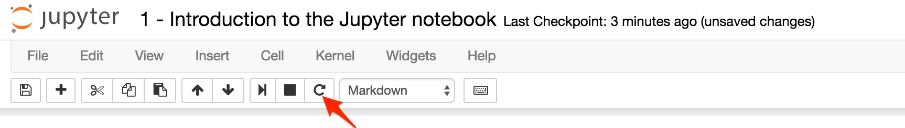
Then, run all cells in the notebook in order by choosing Cell\(\rightarrow\)Run All from the menu above.
Exercise: Getting your feet wet¶
Problem 1 (5 points)
Implement the function hello and make sure the test cells runs without any errors. You will need to delete the line with raise NotImplementedError, write your own solution, and then re-run the cell before running the test cell. Each time you change code in a cell, you will need to re-run that cell before running any other cells that depend on it!
def hello(name):
"""Returns a message containing "Hello, <name>!",
where <name> is passed in as an argument.
Parameters
----------
name : string
The name of the person to say hello to
Returns
-------
the message containing "Hello, <name>!"
"""
raise NotImplementedError
To test your function, you’ll want to create a new cell to call it with a test input. To create a new cell, click on Insert\(\rightarrow\)Insert Cell Below in the menubar above. Then, in your new cell, add the following code (or whatever code you want, really):
hello("Lab in C&P students")
Verify that when you run your new code cell, it prints out Hello, Lab in C&P students!
Markdown and LaTeX Cheatsheet¶
As mentioned above, Markdown is a special way of writing text in order to specify formatting, like whether text should be bold, italicized, etc.
For the following few exercises, try to format the specified text using Markdown. You can use the following website as a reference: https://help.github.com/articles/markdown-basics
Hint #1: after editing the Markdown, you will need to run the cell so that the formatting appears.
Hint #2: try selecting this cell so you can see what the Markdown looks like when you’re editing it. Remember to run the cell again to see what it looks like when it is formatted.
Note that in this notebook, the formatted text and equations are actually images, so you cannot look at the cell in edit mode to see the answer. However, in all the other notebooks, I will write all the instructions and equations in Markdown, so in the future you will always be able to look at the cell in edit mode to see how the formatting is done.
Italics and Boldface¶
Problem 2 (1 point)
Italicize the word "Banana", like this: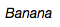
YOUR ANSWER HERE
Problem 3 (1 point)
Bold the word "Orange", like this: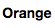
YOUR ANSWER HERE
Lists¶
Problem 4 (1 point)
Make a bulleted list consisting of the words "Apple", "Banana", and "Orange", like this: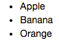
YOUR ANSWER HERE
Problem 5 (1 point)
Make a numbered list consisting of the words "Strawberry", "Blueberry", and "Raspberry", like this: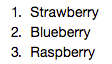
YOUR ANSWER HERE
Problem 6 (1 point)
Make the following list of lists: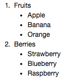
YOUR ANSWER HERE
LaTeX Equations¶
One of the advantages of using Markdown is that it allows us to easily write equations using LaTeX.
The next few exercises will go over the basics of LaTeX equation formatting. You should be able to find all of the symbols you need on this page. Alternatively, if you forget the mathematical operation that a particular symbol corresponds to, check the Wikipedia page on mathematical notation.
Basic equation formatting¶
Problem 7 (1 point)
To format an equation using LaTeX, you must wrap the text in dollar signs,$like this$. Format "y=ax+b" to produce the following:
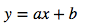
YOUR ANSWER HERE
Subscripts and superscripts¶
Many equations require the use of exponents or underscores. To include a superscript, use the ^ symbol, and for subscripts, use the _ symbol.
Problem 8 (1 point)
Format the following equation: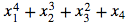
YOUR ANSWER HERE
Sometimes, we need to use exponents or underscores that require more than one character. Unfortunately, by default, the ^ or _ symbols only apply to the next character. To tell them to apply to multiple characters, the exponent or subscript needs to be wrapped in curly braces.
Problem 9 (1 point)
Format the following equation: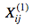
YOUR ANSWER HERE
Greek letters¶
We may ask you to use Greek variable names or letters in some of the assignments for this course. In general, greek letters can be formatted in LaTeX with \letter, where “letter” is the name of the greek letter. For the lowercase version, use \letter, and for the uppercase version, use \Letter. For example, to format the greek letter “delta”, you would do \delta to produce \(\delta\) and \Delta to produce \(\Delta\).
Problem 10 (1 point)
Format the following equation, which uses several common greek variables (note: the only letters that are *not* greek are the numbers and the "m" and "n" subscripts).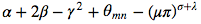
For reference, the greek letters used in this equation are called: 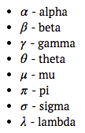
YOUR ANSWER HERE
Sums and products¶
Sums and products across variables can be displayed using \sum and \prod. To get the variables above and below the sum or product symbols, you can use superscripts and subscripts.
As a reminder, the large sum and product symbols mean the sum or product of a series of numbers or variables. Usually, the index variable along with its starting value is defined underneath the sum/product symbol (e.g. \(i=1\)), and its final value is given above the sum/product. For example, the following is a sum of all \(x_i\) where \(1\leq i\leq N\):
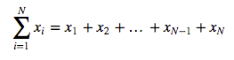
and similarly, the following is a product of all \(y_j\) where \(1\leq j\leq M\): 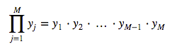
Problem 11 (1 point)
Format the following equation using double dollar signs (instead of single dollar signs like above). This will always make the equation display on a new line, and will make symbols like sums and products look nicer.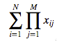
YOUR ANSWER HERE
Putting it all together¶
Problem 12 (1 point)
Format the following equation (using double dollar signs):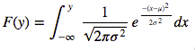
YOUR ANSWER HERE
Turning in homeworks¶
When you are finished with this notebook. Save your work in order to turn it in. To do this select File->Download As…->PDF.

You can turn in your assignments in Gradescope (will be described in class).